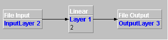

Basic Tutorial
This tutorial creates a
simple network connecting a file input layer containing four examples of
two input values to a file output layer via a linear layer containing
two neurons.
- Using a text editor, create a new file and add four lines as
follows:
0.2;0.3
0.4;0.5
0.6;0.8
0.9;1.0
- Save the file to disk (e.g. c:\temp\sample.txt).
- Start JoonEdit and insert a new linear layer. Click on this
layer to display the properties page. Set the rows value to 2.
- Insert a File Input layer to the left of the linear layer, then
click on it to display the properties window:
- Enter 1,2 in the Advanced Column Selector parameter.
- Enter c:\temp\sample.txt in the fileName parameter.
- Leave the firstRow as 1 and the lastRow as 0 so that the input
layer will read all the rows in the file.
- Connect the input layer to the linear layer by dragging a line from
the little circle on the right hand side of the input layer, releasing
the mouse button when the arrow is on the linear layer.
- Now insert a File Output layer to the right of the linear layer,
click on it and insert into the properties window:
”c:\temp\sampleout.txt”
on the fileName parameter.
-
Connect
the linear layer to the file output layer by dragging a line from the
little circle on the right hand side of the linear layer, releasing
the mouse button when the arrow is on the file output layer.
-
At this stage the screen should
look similar to this:

-
Click on
the ‘Tools->Control Panel’ menu item to display the control panel.
Insert the following:
- Set the epochs parameter to 1. This will process the file
once.
- Set the training patterns parameter to 4. This sets the number of example
rows to read.
- Leave the learningRate and the momentum fields unchanged. These
parameters are used for training a net.
- Also set the learning parameter to FALSE, as the net is not
being trained.
-
Click the
Run button
-
A file
named c:\temp\sampleout.txt will be written with the results.
-
If you
want, you can save the net to disk with the ‘File->Save As’ menu
item, and reload it later with ‘File->Open’.